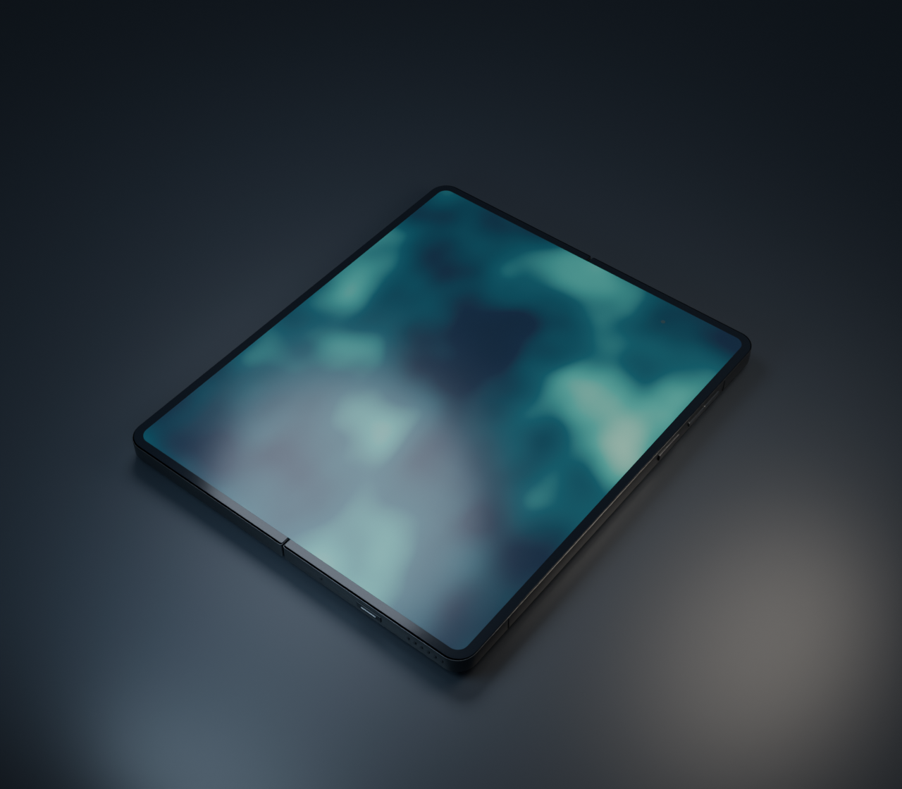
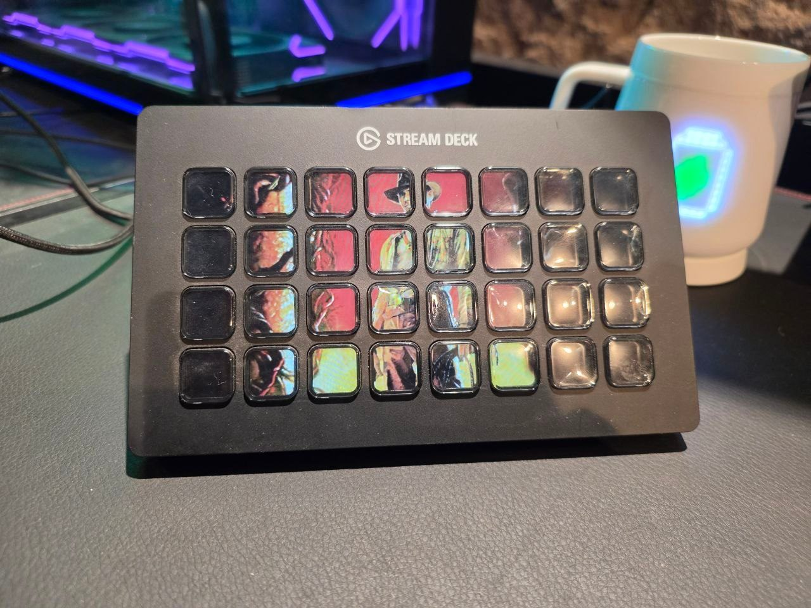

Admira · Digital twins
Más que una pantalla.
Crea contenido y animaciones viendo cómo quedan en el objeto que los reproduce. Teclas, pantallas circulares y displays integrados: cada superficie tiene su propio escenario.
Crear con Admira DirectorTeclado · pantalla + 12 teclas LCD
Corsair Galleon 100 SD
Gemelo 3D, emisiones horizontal y vertical, playlist e iluminación.
Abrir tecladoReloj · esfera 410 × 502
Apple Watch Ultra
Gemelo 3D con correa Ocean azul, playlist propia y control cruzado con el reloj físico: corona, botón de Acción y botón lateral.
Abrir relojTeléfono · pantalla 440 × 956
iPhone Pro Max
Gemelo 3D con cable USB-C, playlist propia y control cruzado con el iPhone físico: botones de Acción, volumen y lateral, casi al fotograma.
Abrir iPhoneTinta electrónica · 480 × 800 BWRY
SY11-ab
Gemelo 3D de la pantallita de tinta. El previo de la pantalla física se actualiza con la playlist del iPhone Pro Max, anclada al reloj del servidor del espejo iPhone · Galleon.
Abrir tinta electrónica
Fold5 · bisagra articulada en Blender
Samsung Galaxy Z Fold5
Explora el objeto abierto, Flex o cerrado. Estado del player nativo mediante observador USB externo y previo del contenido identificado, sin captura ni sincronía de fotogramas.
Abrir Fold5Plegable · pantalla interior 1080 × 960
Samsung Galaxy Fold
Gemelo 3D abierto con cable USB-C, playlist propia y control cruzado con el Fold físico, que emite con las piezas descargadas en el teléfono, también sin internet.
Abrir FoldPlegable · monitor ThinkPad + teclado
iPhone Duo · ThinkPad X1
Gemelo 3D del Duo plegado con la app Windows 11: la tapa emite en directo la playlist #iphoneDuo de admira.tv y el teclado ThinkPad la controla (1–9, N ⏭, P ⏮, espacio ⏯, i, M, Q, Esc, flechas) con pitidos de 8 bits.
Abrir el gemelo ThinkPadPlegable · dos pantallas · mini portátil
iPhone Duo
Gemelo 3D del iPhone Duo físico: el plegable de titanio abierto como un mini portátil, con el monitor Lenovo de la app Windows 11 emitiendo en directo la playlist #iphoneDuo y el teclado táctil en la mitad de abajo (1–9, N ⏭, P ⏮, espacio ⏯, i, M, Q, Esc, flechas) con pitidos de 8 bits.
Abrir el iPhone DuoEscenario · tres pantallas como una
Trío · reloj + iPhone + Fold
Los tres aparatos a escala real sobre la mesa: sincronizados (misma playlist al fotograma) o extendidos (una composición repartida entre las tres pantallas), también en los físicos.
Abrir escenario
Controlador · 32 teclas LCD
Stream Deck XL
Cara 8 × 4, modelo 3D y señal del perfil activo cuando el puente está disponible.
Abrir Stream DeckOrdenador · 7 pantallas circulares
AdmiraNeXT01
El gemelo de METAHUMAN. Prueba piezas, modos de reparto e iluminación en simulación.
Abrir ordenadorOrdenador · 7 pantallas circulares
AdmiraNeXT05
Su propia disposición de ventiladores, contenidos y luz por componente. Vista previa local.
Abrir AdmiraNeXT05Taza · display integrado
PlayerTaza
El player de la taza, con sus proyectos y pruebas de contenido ya disponibles.
Abrir tazaDel escenario al objeto
Admira Director es el espacio de creación. Los digital twins son el espacio de previsualización. Para kioskos de vending, lobbys de cine y presentaciones web, continúa en Interactivos.
Abrir Interactivos